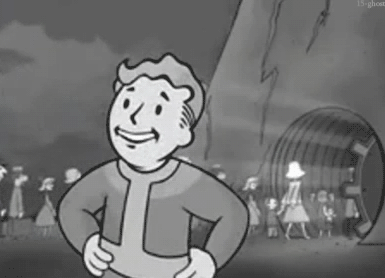

My Favorite Anime
My Favorite Media
My Favorite Video Game: Fallout New Vegas

Currently, my new favorite video game is Fallout New Vegas, an action role-playing game developed by Obsidian Entertainment and published by Bethesda Softworks. I only started playing it recently, but I am really enjoying it so far.
The game is set in a post-apocalyptic open world environment around the area of Las Vegas, Nevada, and features a rich storyline with multiple factions and quests to explore. There are so many different ways to play the game, and almost every choice affects the outcome of the story or your relationships with the other factions living in New Vegas. It is definitely one of the best RPGs I have ever played, and I highly recommend it to anyone if you can get the game running on your computer.Why Did I use this Gif
I chose this gif because it is a popular animation of the animated character Vault Boy, who is the mascot of the Fallout series. The Vault Boy is an iconic symbol of the series and is often associated with the game's retro-futuristic aesthetic. The gif shows the Vault Boy pointing finger guns towards the viewer while people are walking into a vault. The reason why I chose this gif is because it perfectly captures the aesthetic of the game. I also chose the gif over an image because the animated style makes it more engaging and dynamic if the user has never played the game before.